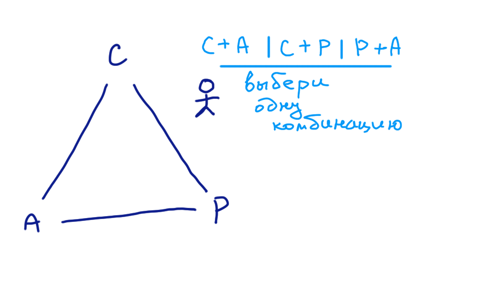

Базы данных: введение, часть третья
Илья Тетерин
2012-10-08
(use arrow keys or PgUp/PgDown to move slides)
Маленькая сказка
Идея ... !
- Идея: сервис - Позвони, напомню! — Никогда не забывайте, даже если вы не помните, что забыли!
- моя записная книжка да мой телефон как API
- Первый звонок, первый клиент
- Я Джон, хочу потом посмотреть "Начало" ...
- ... время ... новый звонок ...
- Я Джон, напоминалки есть? Ага, вы хотели "Начало" посмотреть. О, спасибо!
- ... народу нравится, 3 рубля за обращение - дешево! ...
- Растём ...
- ... даже скорее так: РАСТЁМ! :)
Первые траблы
- растем ... но народ уже в очереди висит ... не справляюсь!
- ... вчера болел - вообще никого не обслужил
- вчерашний народ рассержен, да еще и знакомым рассказывает
- ... ???? ...
- ... Надо что-то делать!!!
Первое решение
- Дорогая, ты видела какую я штуку сделал?
- Поможешь?! Вливайся!
- Вот твой стол, твоя книжка, твоя гарнитура.
- Я поднял PBX (АТС - единый входной номер - балансер)
- ... полетели!!!
- ... в первый же день обслужили в два раза больше клиентов.
Что такое???
- Звонок: Я Джим, напомни есть сегодня встречи?
- ... посмотрел, говорю "Нет, нету, спасибо за ваш звонок!"
- Это я, Джим, из-за вас я пропустил визит к стоматологу!!!!
- анализ: когда Джим оставлял инфу, он попал не ко мне, а к жене
- в моей книге записи нет ...
- Смотрим записнушку жены - ага, челу не повезло.
- система not consistent (неоднородна? не согласована?) - показания не сходятся
- ...надо что-то делать!!!!
Решение несогласованности
- заводим протокол (оговоренная последовательность шагов и процедур):
- до того, как сказать "Спасибо, до связи!" мы записываем данные друг другу
- когда получаем звонок - все будет хорошо, ведь все данные есть у всех - правильный быстрый ответ!
- ... вот оно РЕШЕНИЕ !!!
Опять проблемы
- трабл: на время синхронизации записи - всем приходится прерваться и потормозить - клиенты в очереди ждут, те, кто сейчас на линии злятся на отрывающегося оператора
- ... да не проблема - все равно большую часть все ищут информацию - а тогда мы отвечаем быстро!
- ... прерывание всех ... синхронность ...
- ой! протокол надо соблюдать всегда, а что, если кто-то недоступен (телефон, заболел, в магазин отошел)?
- наш сервис unavailable - висит "подождите, я щас засинкаюсь", а потом клиент бросает трубку
- ... надо что-то делать ...
нам надо Consistent + Available
- идея: если чел рядом - мы ему говорим ( == быстро!), а если нет - email пошлем (и ответили, и надежно), он утром прочитает, внесет в свою книгу (ответ согласован!).
- и наступило у нас долгое счастье
- ... А кто сказал, что это сказка с хорошим концом? ...
- Потеря коммуникаций: жена разговаривать не хочет.
- Уже два дня! ... письма пишу, а она их не читает ...
- А работать надо!!! ... и она тоже работает - есть несогласованные ответы!
- произошло разделение сети (partition) и наши апдейты "не доходят".
... бонусная идея ...
- заводим бегунок, который бегает туда-сюда, апдейты носит
- eventually (когда-ни-будь!) наши базы будут синхронизированы
- ... если только ...
CAP сказка из жизни
Исходно:
A plain english introduction to CAP Theorem
by Kaushik Sathupadi
Перевод:
CAP-теорема простым, доступным языком by Артём Попов
В терминах базы
- Сервис - одна точка входа, один процессор, одна база
- ... упало - ничего не работает
- Делаем "два" мастера - один упал, второй работает
- ... PBX/АТС == балансер ...
- ... разъехалось состояния (consistency)
- Делаем синхронный протокол - отвечаем согласованно
- ... не можем принять апдейт когда всех нет
- Даешь асинхронность - можно принять апдейт всегда
- ... есть шанс, что до всех еще не дошло (eventually!)
CAP
- Consistency - согласована = все показания сходятся
- Availability - доступна = всегда отвечает
- Partition (tolerance) - работает с порванной сетью

CAP теорема - описание
wiki: CAP theorem
Brewer's CAP Theorem
by Julian Browne
Eventually Consistent - Revisited
Talk: Availability & Consistency
by Werner Vogels, CTO Amazon / @werner
Werner Vogel регулярно постит ссылки "Back-to-Basics Weekend Reading" - краткая аннотация и ссылка на исходную статью. Например: Counting Bloom Filter.
Новости CAP теоремы...
CAP Twelve Years Later: How the "Rules" Have Changed by Eric Brewer (@eric_brewer / http://www.cs.berkeley.edu/~brewer/), May 30, 2012
... "2 of 3" is missleading ...
... что такое Partition? - это просто таймаут при работе с сетью ... и как ваша система реагируется на это ...
Strategy should have three steps: detect partitions, enter an explicit partition mode that can limit some operations, and initiate a recovery process to restore consistency and compensate for mistakes made during a partition.
Очень хорошая статья, много буков, читать!
Изменяемое состояние
- фазированные (каталог раз в год)
- on-fly изменения (надо прямо сейчас - биржа)
- промежуточные варианты
nb: read-only данные - легко масштабируются под нагрузку - просто добавь копий данных
Транзакция в реальной жизни
- в идеале - мгновенный переход из состояния "до" в состояние "после"
- фокус с переодеванием человека на модном шоу
- никто не должен видеть процесс перехода
(как произошло)
- state machine - машина состояний
- связанные аккаунты - с одного списали, на другой занесли (несколько действий за один заход)
- а как же наши журналы, индексы, счетчики етс? - сложное изменяемое состояние
транзакция сложнее
- математика: y = f(x) - ответ не зависит от состояния - неизменяем
- атомарность == неделимое - либо всё, либо ничего
- компьютер - внешне быстр и атомарен, а внутри?
- атомарность i++
- нет зрителей - нет проблем, synchronize и делай все в "закрытом блоке"
- закрытый мир / stop the world
ACID / АСИД
Традиционные требования к базе данных до 2000-го года
- Atomicity = Атомарность
- Consistency = Согласованность / Корректность
- Isolation = Изолированность / Невидимость
- Durability = Долговечность / Устойчивость
acid (eng) - кислота
© http://lingvo.yandex.ru/acid/
- Действий много, но я покажу либо всё, либо ничего
- Когда закончу - всё будет ОК, всё будет подчищено
- Вы работайте, а я вам своё пока не покажу, у меня своя копия мира
- Если сказал сделано, значит не пропадет, всё записано надежно
Возможно только в условиях полного контроля - "закрытый мир, закрытая вселенная" - я обо всём знаю
Атомарность
- либо случилось, либо нет
- rollback
- undo-log
Согласованность
- внутренне ( индексы, формат етс )
- внешне - все суммы посчитаны, все внешние ключи проставлены
- а как описать внешние ограничения на стороне базы?
- вычислительные ресурсы
- связи внутри и вовне
Изолированность
- свой маленький мир
- я вижу свои изменения
- я не вижу изменений соседа
- начало времен
- иллюзия последовательности событий
- ... уровни изоляции (подводная лодка)
Isolation levels / уровни изоляции
Важно когда работают несколько пользователей
- Read uncommitted / dirty reads
они откатились, а мы увидели
- Read committed / non-repeatable read
значение ряда поменялось!
- Repeatable reads / phantom reads
набор рядов меняется
- Serializable
иллюзия последовательности - я один в мире
SCN / system change number / "время" базы
wiki: Isolation (database systems)
How Oracle Manages Data Concurrency and Consistency
Долговечность / Устойчивость
- я сказал "ок, значит ок"
- сначала в журнал, только потом ok
- свет выключили
- винт обсыпался
- в огне не горит, в воде не тонет
- журнал регистрации операций с недвижимостью - с печатью, пронумерованные, прошитые
Достижимость ACID в кластере
- атомарность?
- согласованность?
- изолированность?
- устойчивость?
... многоядерный компьютер - подобен кластеру и страдает от этих же проблем ...
BASE
- Basically Available - в принципе доступна
- Soft-state - в принципе знаем состояние
- Eventually-consistent - в принципе сойдется со временем
BASE: An Acid Alternative
by Dan Pritchett
Процесс последовательной трансформации с уменьшением глобального состояния - переформулируем систему так, дабы она прощала ошибки.
Basically Available - в основном доступна, даже в условиях partition/crash - т.е. система "деградирует", но продолжает работать
Soft State - данные потенциально восстановимы и можно жить даже с неверным состоянием (запаздывание, не ответ) етс.
Eventually consistent - "ОК" давать оптимистичные ответы, если что, потом извинимся - поправим
Подход "в принципе..." / "верю, что всё будет хорошо, но готов поправить, если это не так"
Заблуждения распределенных систем
- The network is reliable
- Latency is zero
- Bandwidth is infinite
- The network is secure
- Topology doesn't change
- There is one administrator
- Transport cost is zero
- The network is homogeneous
Fallacies of Distributed Computing Explained by Arnon Rotem-Gal-Oz
Желаемые "свойства"
- Consistency: Updates in an agreed order
- Durability: Once accepted, won’t be forgotten
- Real-time responsiveness: Replies with bounded delay
- Security: Only permits authorized actions by authenticated parties
- Privacy: Won’t disclose personal data
- Fault-tolerance: Failures can’t prevent the system from providing desired services
- Coordination: actions won’t interfere with one-another
Очень понравился курс: CS5412: Cloud Computing (Spring 2012) / Prof. Ken Birman / CS Cornell University (слайды)
... а где сказка с добрым концом?
Когда-то мир готов был подождать - ушел в базу, вернусь - скажу "точно" - ACID
Потом всем захотелось много всего и сразу - пришлось придумать BASE
Потом доказали - ищите баланс между "точно" и "сразу" - CAP теорему
Как же с этим жить? ...
Google / Research at Google / Distributed Systems and Parallel Computing - 85 публикаций
2011: Megastore: is a storage system developed to meet the requirements of today's interactive online services. Megastore blends the scalability of a NoSQL datastore with the convenience of a traditional RDBMS in a novel way, and provides both strong consistency guarantees and high availability. We provide fully serializable ACID semantics within fine-grained partitions of data. This partitioning allows us to synchronously replicate each write across a wide area network with reasonable latency and support seamless failover between datacenters.
Oct 2012: Spanner: is Google's scalable, multi-version, globally-distributed, and synchronously-replicated database. It is the first system to distribute data at global scale and support externally-consistent distributed transactions. ... с упоминанием atomic clocks + GPS ...
Итого:
ACID - мир един и подконтролен - всё знаю
Уровень изоляции транзакций - "миры данных" подконтрольно разделены
BASE - "в принципе" мир упрощенно выглядит так / знаю кое-что
CAP - точное глобальное знание доступно только при бесконечно надежных каналах и бесконечной скорости.
- ... а что вы знаете по скорость света и горизонт событий?
- ... а вы видели кота Шредингера?
- ... а что такое вероятностные структуры данных?
- ... а зачем базе GPS?
Вопросы?